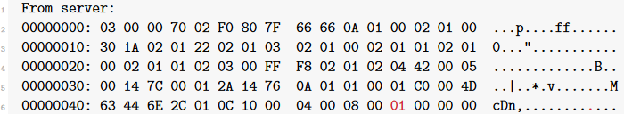

Breaking enhanced RDP security
To me, downgrading to standard RDP security is unsatisfactory. If I were an attacker, I would try to make the attack look as inconspicuous as possible. The victim will notice a different warning than usual and that it has to enter their credentials after the connection has already been established.
It always bugged me that I don’t see the same SSL warning when I MitM the RDP connection with Cain. I find it hard to explain to a customer why they have to take SSL warnings seriously, especially if they use self-signedcertificates which cannot possibly be verified, if this MitM tool causes a completely different warning to be shown.
So let’s try to downgrade the connection to enhanced RDP security. For this, we need our own self-signed SSLcertificate, which can be generated by openssl:
# openssl req -new -newkey rsa:"$KEYLENGTH" -days "$DAYS" -nodes -x509 -subj "$SUBJ" -keyout privatekey.key -out certificate.crt 2>/dev/null
We wrap our Python TCP sockets inside SSL sockets at the right time and we are done. I said earlier that the standard RDP protocol is being used inside the SSL tunnel, but the server always chooses “None” as the encryption level. That’s fine, since it can be safely assumed that the SSL wrapper ensures the authenticity and integrity of the data. Using RC4 on top of SSL is a needless waste of resources. The extraction of key strokes works exactly like in the previous section.
The only extra security feature is consists of the server confirming the original protocol negotiation request. After the SSL connection has been established, the server says to the client: “By the way, you told me thesewere the security protocols you are capable of.” In binary, it looks like this:


The client can then compare this value with what it originally sent in the very first request and terminate the connection if it doesn’t match. Obviously, it is already too late. We are in the middle and can hide the forged negotiation request from the client by replacing the right byte (highlighted above at offset0x4C) with its original value (in this case0x03).
After that, we can read everything in the clear. Go ahead and try it out.
As expected, the victim sees a proper SSL warning. But something is still different. Instead of being prompted for our credentials before the RDP connection is established, the victim is faced with the Windows logon screen. Unlike with NLA, authentication happens inside the session. Again, that is something that is different from the typical workflow of an admin and could be noticed.